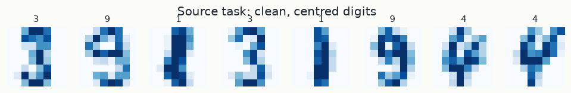
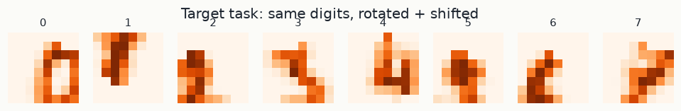
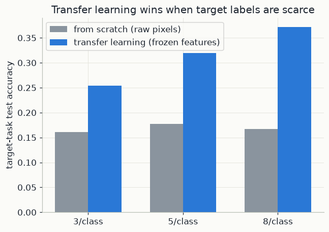

import os
os.environ["TF_CPP_MIN_LOG_LEVEL"] = "3"
os.environ["TF_ENABLE_ONEDNN_OPTS"] = "0"
import warnings
warnings.filterwarnings("ignore")
import numpy as np
import matplotlib.pyplot as plt
import tensorflow as tf
from scipy.ndimage import rotate, shift
from sklearn.datasets import load_digits
from sklearn.model_selection import train_test_split
from sklearn.linear_model import LogisticRegression
from sklearn.preprocessing import StandardScaler
from sklearn.pipeline import make_pipeline
import mlutils
mlutils.set_style()
tf.get_logger().setLevel("ERROR")
tf.keras.utils.set_random_seed(1) # seeds Python, NumPy and TensorFlow together
tf.config.experimental.enable_op_determinism() # identical results on every run
rng = np.random.default_rng(0)1. Convolution: one small filter slid across the image
A digit image here is an 8\times 8 grid of pixel intensities between 0 and 1. A dense layer treats those 64 numbers as an unordered list. It does not know that pixel (3, 4) sits next to pixel (3, 5), and a pattern it learns in one corner has to be learned again for every other position. A convolutional layer builds in two facts about images: nearby pixels belong together, and the same pattern (an edge, the end of a stroke, a curve) can appear anywhere.
Definition. Let x be an image with entries x[i,j] (row i, column j), and let w be a small kernel (or filter), here 3\times 3, with entries w[m,n] for m, n \in \{0, 1, 2\}. The discrete 2-D convolution produces a new grid
(x * w)[i,j] = \sum_{m=0}^{2}\sum_{n=0}^{2} w[m,n]\;x[i+m,\,j+n] .
Read it as: lay the kernel over the 3\times 3 patch whose top-left corner is at (i, j), multiply the overlapping numbers pair by pair, and add the nine products. Then slide one pixel and repeat. The result is large where the patch looks like the kernel and small or negative where it does not, so each kernel is a pattern detector. (Textbook convolution flips the kernel first; without the flip the operation is called cross-correlation. Deep-learning libraries compute the unflipped version and call it convolution. Since the kernel is learned, the flip makes no difference.)
On an H\times W image a 3\times 3 kernel fits in (H-2)\times(W-2) positions. With
padding="same", a border of zeros is added first so that the output keeps the input
size, 8\times 8 here.
A convolutional layer adds a bias b and an activation, giving a feature map
a[i,j] = \mathrm{ReLU}\big((x*w)[i,j] + b\big), and it uses many kernels at once, one
feature map per kernel. conv1 has 16 kernels, so it turns the 8\times8\times1 image
into 8\times8\times16 feature maps. When the input already has C channels, like the
16 maps entering conv2, each kernel is 3\times3\times C and the sum also runs over
the channels.
Weight sharing. The same kernel weights are used at every position, so the number of parameters does not depend on the image size. For kernel size K, C_{\text{in}} input channels and C_{\text{out}} kernels, each with one bias:
\text{parameters} = (K\cdot K\cdot C_{\text{in}} + 1)\cdot C_{\text{out}} .
For conv1 this is (3\cdot3\cdot1+1)\cdot16 = 160. A dense layer producing the same
8\cdot8\cdot16 = 1024 outputs from the 64 input pixels needs one weight per
input-output pair plus one bias per output: 64\cdot1024 + 1024 = 66{,}560 parameters,
about 416 times more. Sharing weights also fixes how the layer reacts to shifts: move
the input by one pixel and the feature map moves by one pixel with it. This property
is called translation equivariance.
Worked example. A 5\times 5 image with a vertical stroke in column 2 (columns numbered 0 to 4), and a kernel that responds to vertical strokes:
x = \begin{bmatrix}0&0&1&0&0\\0&0&1&0&0\\0&0&1&0&0\\0&0&1&0&0\\0&0&1&0&0\end{bmatrix},
\qquad
w = \begin{bmatrix}-1&2&-1\\-1&2&-1\\-1&2&-1\end{bmatrix}.
Without padding the output is 3\times 3. Each kernel row meets an identical image row, so each output is 3 times the product for one row:
| output | patch columns | one kernel row times one image row | sum of 3 rows |
|---|---|---|---|
| (x*w)[0,0] | 0, 1, 2 | (-1)\cdot 0 + 2\cdot 0 + (-1)\cdot 1 = -1 | -3 |
| (x*w)[0,1] | 1, 2, 3 | (-1)\cdot 0 + 2\cdot 1 + (-1)\cdot 0 = 2 | 6 |
| (x*w)[0,2] | 2, 3, 4 | (-1)\cdot 1 + 2\cdot 0 + (-1)\cdot 0 = -1 | -3 |
All image rows are the same, so every output row is (-3, 6, -3), and after ReLU it is (0, 6, 0): the map lights up exactly over the stroke. Now shift the stroke one column to the right, to column 3. The output rows become (0, -3, 6), and after ReLU (0, 0, 6). The detection moved with the stroke, and its strength, 6, did not change.
2. Pooling, depth, and learned features
Pooling summarises a feature map. Max pooling with a 2\times 2 window
(pool1) keeps the largest value in each non-overlapping 2\times 2 block:
p[i,j] = \max\big\{a[2i,2j],\; a[2i,2j+1],\; a[2i+1,2j],\; a[2i+1,2j+1]\big\} .
The 8\times 8 maps become 4\times 4, and a feature that moves by one pixel within a
block gives the same pooled value. Global average pooling (gap) goes all the
way: it replaces each whole H\times W feature map by its average,
\frac{1}{HW}\sum_{i,j} a[i,j], leaving one number per channel. In the worked example
the largest value in the map is 6 before and after the shift: after pooling, the
answer to "is there a vertical stroke?" no longer depends on where the stroke is.
This built-in tolerance of small shifts matters below, because the target digits are
shifted and rotated.
Depth makes features more abstract. A unit of conv1 sees a 3\times 3 patch of
the image: its receptive field is 3 pixels wide. After pool1, each unit covers
4\times 4 pixels, and neighbouring pooled units are 2 pixels apart. A 3\times 3
kernel in conv2 spans three pooled units, so its receptive field is
4 + 2\cdot 2 = 8 pixels: the whole digit. The first layer can only detect local
things such as edges and stroke directions. The second combines them into larger
parts such as loops, corners and junctions. The dense layer feat combines those
into 32 numbers that describe the digit as a whole. In large networks trained on
photographs the same progression is observed directly: edges, then textures, then
object parts, then objects.
The whole source model, counted.
| layer | output shape | parameters |
|---|---|---|
conv1: 16 kernels of 3\times3\times1 |
8\times8\times16 | (9+1)\cdot16 = 160 |
pool1 |
4\times4\times16 | 0 |
conv2: 32 kernels of 3\times3\times16 |
4\times4\times32 | (144+1)\cdot32 = 4{,}640 |
gap |
32 | 0 |
feat: dense |
32 | 32\cdot32+32 = 1{,}056 |
source_head: dense, softmax |
10 | 32\cdot10+10 = 330 |
The head produces 10 scores s_1, \dots, s_{10} and turns them into class probabilities with the softmax, p_c = e^{s_c}/\sum_{c'} e^{s_{c'}}, which are positive and add up to 1.
3. Transfer: keep the features, retrain the head
A model in two parts. Write the network as a feature extractor followed by a head:
\text{model}(x) = g_\phi\big(f_\theta(x)\big) .
f_\theta maps an image to a feature vector in \mathbb{R}^{32}. Its parameters
\theta are the weights of conv1, conv2 and feat, 160 + 4640 + 1056 = 5{,}856
numbers. g_\phi maps the features to 10 class probabilities; its parameters \phi
are the 330 weights of source_head.
Two tasks, two distributions. In the source task the images come from a distribution P_S(x): clean, centred digits, with many labels. In the target task they come from P_T(x): the same digits, rotated and shifted, with few labels. So P_S(x) \neq P_T(x); this mismatch is called domain shift. What stays the same is the meaning of the labels: a rotated 3 is still a 3, so the rule linking an image to its class, P(y \mid x), is shared. Transfer learning bets that features useful for the source task are also useful for the target task.
Freezing. Source training fits both parts together, on N_S labelled source images with the cross-entropy loss \ell:
\theta^\ast,\ \phi^\ast = \arg\min_{\theta,\,\phi}\ \frac{1}{N_S}\sum_{i=1}^{N_S} \ell\big(g_\phi(f_\theta(x_i)),\ y_i\big) .
For the target task, keep \theta^\ast fixed (frozen) and fit only a new head h_\psi with parameters \psi, on the N_T labelled target images:
\psi^\ast = \arg\min_{\psi}\ \frac{1}{N_T}\sum_{i=1}^{N_T} \ell\big(h_\psi(f_{\theta^\ast}(x_i)),\ y_i\big) .
Each target image is turned once into its 32 features, and the new head is an ordinary classifier trained on those features.
Why this helps when labels are scarce. Compare parameters with labelled examples. With 3 labels per class there are N_T = 30 target examples. A logistic regression on the 64 raw pixels has 10\cdot(64+1) = 650 parameters, and training the whole network from scratch would mean more than 6,000. On the 32 frozen features the head has 10\cdot(32+1) = 330 parameters. More importantly, the hard part, learning what strokes and shapes look like, was already done with about 1,440 labelled source images. The few target labels only need to say which region of feature space belongs to which digit. The price is flexibility: frozen features cannot adapt to anything the source task never taught them.
Feature extraction vs. fine-tuning. The approach above is feature extraction: \theta never changes. Fine-tuning starts from \theta^\ast and continues to train all parameters on the target data, usually with a small learning rate so that the weights stay near where they started. Fine-tuning can adapt the features to the new domain, but with very few labels it can overfit and erase what was learned. A common rule: freeze when target labels are scarce, fine-tune when there are more of them.
In the code. source_model is g_\phi \circ f_\theta, trained on the clean digits
Xc_train. feature_extractor = tf.keras.Model(inp, features) is f_{\theta^\ast} on
its own; it stays frozen because it is only ever used for prediction afterwards. In
section 6, fewshot_accuracy trains a LogisticRegression head h_\psi on
feature_extractor.predict(...) outputs for the transfer model, and the same
classifier directly on the 64 raw pixels for the from-scratch baseline, with 3, 5 or
8 labels per class.
4. Source task: clean handwritten digits
sklearn's digits dataset: 1797 handwritten digits, 8x8 pixels, already on disk —
no download needed. We train a small CNN to recognise all 10 digits from clean,
centred images. This is the source task: plenty of labels, and it's what the
feature extractor will actually learn from.
digits = load_digits()
X_clean = (digits.images / 16.0)[..., np.newaxis].astype("float32")
y_clean = digits.target
Xc_train, Xc_test, yc_train, yc_test = train_test_split(
X_clean, y_clean, test_size=0.2, random_state=0, stratify=y_clean)
fig, axes = plt.subplots(1, 8, figsize=(11, 1.6))
for ax, img, label in zip(axes, Xc_train[:8], yc_train[:8]):
ax.imshow(img.squeeze(), cmap="Blues")
ax.set_title(str(label), fontsize=10)
ax.axis("off")
fig.suptitle("Source task: clean, centred digits")Text(0.5, 0.98, 'Source task: clean, centred digits')

inp = tf.keras.Input(shape=(8, 8, 1))
z = tf.keras.layers.Conv2D(16, 3, activation="relu", padding="same", name="conv1")(inp)
z = tf.keras.layers.MaxPooling2D(2, name="pool1")(z)
z = tf.keras.layers.Conv2D(32, 3, activation="relu", padding="same", name="conv2")(z)
z = tf.keras.layers.GlobalAveragePooling2D(name="gap")(z)
features = tf.keras.layers.Dense(32, activation="relu", name="feat")(z)
out = tf.keras.layers.Dense(10, activation="softmax", name="source_head")(features)
source_model = tf.keras.Model(inp, out)
source_model.compile(optimizer="adam", loss="sparse_categorical_crossentropy", metrics=["accuracy"])
source_model.fit(Xc_train, yc_train, epochs=20, batch_size=32, verbose=0)
acc_source = source_model.evaluate(Xc_test, yc_test, verbose=0)[1]
print(f"source task test accuracy: {acc_source:.3f}")
feature_extractor = tf.keras.Model(inp, features) # everything up to (not including) the source headsource task test accuracy: 0.917
5. Target task: the same digits, shifted and rotated, almost unlabelled
The target task is deliberately related but different: the same 10 digit classes, but every image is randomly rotated (up to 20°) and shifted by a couple of pixels — and we only keep a handful of labelled examples per class, simulating the situation transfer learning is actually for: a new domain where labels are scarce.
def perturb(img):
dx, dy = rng.integers(-2, 3, size=2)
angle = rng.uniform(-20, 20)
warped = rotate(img, angle, reshape=False, order=1, mode="constant")
warped = shift(warped, (dy, dx), order=1, mode="constant")
return np.clip(warped, 0, 1)
X_shifted = np.stack([perturb(im) for im in (digits.images / 16.0)])[..., np.newaxis].astype("float32")
y_shifted = digits.target.copy()
fig, axes = plt.subplots(1, 8, figsize=(11, 1.6))
for ax, img, label in zip(axes, X_shifted[:8], y_shifted[:8]):
ax.imshow(img.squeeze(), cmap="Oranges")
ax.set_title(str(label), fontsize=10)
ax.axis("off")
fig.suptitle("Target task: same digits, rotated + shifted")Text(0.5, 0.98, 'Target task: same digits, rotated + shifted')

6. Few-shot comparison: raw pixels vs. transferred features
With only a handful of labelled target examples per class, we compare two simple classifiers built on top of them:
- From scratch: logistic regression directly on the raw (shifted, rotated) pixels.
- Transfer learning: run each image through the frozen feature extractor from the source task, then logistic regression on those 32-dimensional features.
Neither approach touches the convolutional weights again — the only thing trained on the target task's tiny label set is a linear classifier, which keeps the comparison about the features themselves, not about how much fine-tuning either gets.
def fewshot_accuracy(per_class, n_trials=6, seed=0):
trial_rng = np.random.default_rng(seed)
raw_accs, transfer_accs = [], []
for _ in range(n_trials):
train_idx = []
for c in range(10):
class_idx = np.where(y_shifted == c)[0]
train_idx.extend(trial_rng.choice(class_idx, size=per_class, replace=False))
train_idx = np.array(train_idx)
test_idx = np.array([i for i in range(len(y_shifted)) if i not in set(train_idx)])
y_tr, y_te = y_shifted[train_idx], y_shifted[test_idx]
X_tr_raw = X_shifted[train_idx].reshape(len(train_idx), -1)
X_te_raw = X_shifted[test_idx].reshape(len(test_idx), -1)
clf_raw = make_pipeline(StandardScaler(), LogisticRegression(max_iter=2000)).fit(X_tr_raw, y_tr)
raw_accs.append(clf_raw.score(X_te_raw, y_te))
X_tr_feat = feature_extractor.predict(X_shifted[train_idx], verbose=0)
X_te_feat = feature_extractor.predict(X_shifted[test_idx], verbose=0)
clf_feat = make_pipeline(StandardScaler(), LogisticRegression(max_iter=2000)).fit(X_tr_feat, y_tr)
transfer_accs.append(clf_feat.score(X_te_feat, y_te))
return np.mean(raw_accs), np.mean(transfer_accs)
per_class_options = [3, 5, 8]
results = [fewshot_accuracy(pc) for pc in per_class_options]
for pc, (raw_acc, transfer_acc) in zip(per_class_options, results):
print(f"{pc} labelled examples/class -> from scratch: {raw_acc:.3f} transfer learning: {transfer_acc:.3f}")3 labelled examples/class -> from scratch: 0.161 transfer learning: 0.254 5 labelled examples/class -> from scratch: 0.178 transfer learning: 0.320 8 labelled examples/class -> from scratch: 0.167 transfer learning: 0.371
raw_accs = [r[0] for r in results]
transfer_accs = [r[1] for r in results]
fig, ax = plt.subplots(figsize=(6.5, 4.5))
width = 0.35
xs = np.arange(len(per_class_options))
ax.bar(xs - width/2, raw_accs, width, color=mlutils.GREY, label="from scratch (raw pixels)")
ax.bar(xs + width/2, transfer_accs, width, color=mlutils.BLUE, label="transfer learning (frozen features)")
ax.set(xticks=xs, xticklabels=[f"{pc}/class" for pc in per_class_options],
ylabel="target-task test accuracy", title="Transfer learning wins when target labels are scarce")
ax.legend()<matplotlib.legend.Legend at 0x1eee744d550>

With only a few labelled examples per class, reusing features learned on the (larger, clean) source task clearly beats learning from the shifted target pixels directly. The convolution-and-pooling architecture picked up features that tolerate small shifts and rotations because it saw many clean digits during source training; raw pixel classifiers have no such tolerance and a handful of labels isn't enough to learn it from scratch.
Exercises
Exercise 1: More labels closes the gap
Extend per_class_options to include 15 and 25. Does the transfer-learning advantage
shrink as more target labels become available?
Solution
print(fewshot_accuracy(15))
print(fewshot_accuracy(25))
Yes — with enough target-task labels, a classifier trained from scratch can learn shift/rotation tolerance on its own, and the gap narrows. Transfer learning helps most exactly when labels are scarce, which is the point of the technique.
Exercise 2: Fine-tune instead of freezing
Instead of a frozen feature extractor + linear classifier, unfreeze conv1/conv2
and fine-tune the whole network (with a small learning rate) on the few-shot target
set. Does it beat the frozen-feature approach, or does it overfit with so few
examples?
Solution
With only a handful of examples per class, fine-tuning every convolutional weight usually overfits badly — there simply isn't enough signal to safely move that many parameters. Freezing the features and only fitting a linear classifier, as in this chapter, is the safer choice in the extreme few-shot regime; fine-tuning becomes worthwhile once there are more target labels.
Key takeaways
- Transfer learning reuses features learned on a data-rich source task for a related, label-scarce target task, instead of training a new model from zero on too little data.
- Freezing the pretrained layers and fitting only a small classifier head is a strong, low-risk baseline exactly when target labels are scarce.
- The benefit is largest precisely when target labels are scarce; with enough target data, training from scratch catches up.